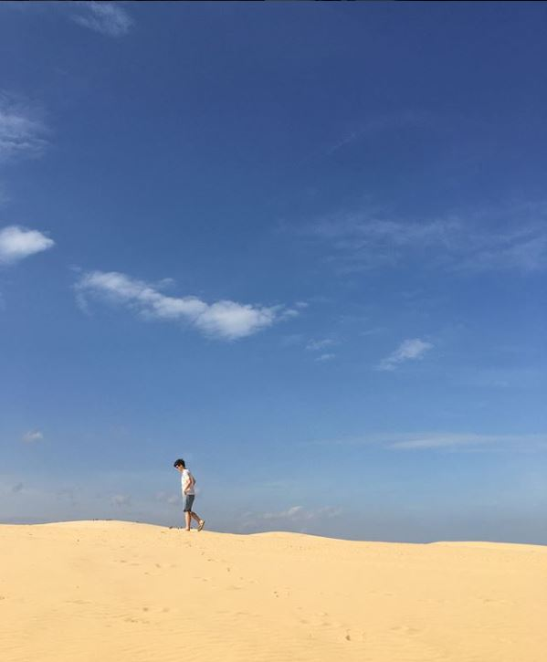
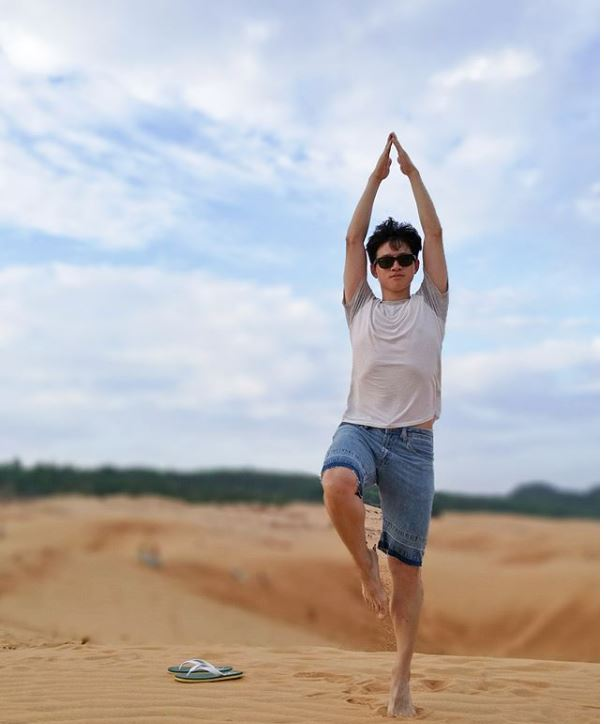
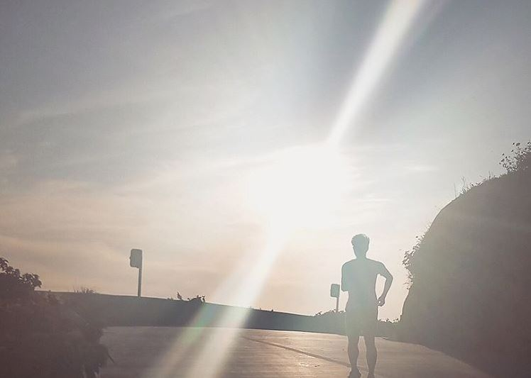

Xusheng Hu
Creative Problem Solver
I'm a creative problem-solver who is passionate about designing interactive systems. To address real problems, I have been exploring the intersection of design, technology, business and culture. I'm always ready to embrace new challenges and to break the bonds.
Across my way to come out of comfort zone and look at the world, I feel very blessed that design has truly given me passion, imagination and judiciousness to try to understand other people and solve their problems in context. Currently, I am looking for a summer internship in the area of UX design/Product Design/Strategic Design.


